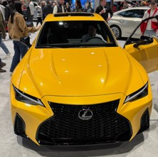

Introduction
Hello, my name is Huzaifa Anis. I am currently a sophomore at the Illinois Institute of Technology (IIT), majoring in Cybersecurity & IT.
Previously, I was a computer engineering major; however, I switched my major going into my sophomore year as I figured cybersecurity was a better fit for me.
I decided to pursue cybersecurity because of its exciting career opportunities. Growing up, I was always fascinated by tech and engineering, so I believe cybersecurity is the perfect fit for me.
Below, I'll share more about myself and my interests outside of college.
Background
- Born and raised in the Rogers Park area of Chicago.
- Currently living in Lincolnwood, IL.
- Originally from Karachi, Pakistan.
About Me
I hope you enjoyed my introduction. I spent a lot of time talking about my education, but not as much about who I am as a person. In this section, I’ll provide a more detailed version of myself.
I work part-time while attending college full-time. I work at Floor & Decor as a Pro Specialist, where I interact with contractors and customers daily.
Ultimately, it's a sales position, which I enjoy because of the variety of people I meet, such as contractors, real estate developers, DIY customers, and more.
Overall, the job is fun and provides a positive environment where I get to help people design their homes.
In addition, I’m also a coach for the First Lego League and the First Robotics Competition, where I mentor middle and high school students, teaching them how to program, design, and build.
I’ve loved FIRST Robotics ever since middle school and have been a part of the organization throughout my middle and high school years. I was the coach of my high school team and had the opportunity to go to state.
Because of my passion for robotics, I was allowed to mentor students twice a week, helping them prepare for their competition while also teaching and holding lessons.
Recently, I visited the Chicago Auto Show due to my passion for cars. I'll be adding some pictures below, along with those from my robotics experience.
Anyway, that’s a little bit about myself, and I hope you enjoy the rest of the website!
Auto Show
Here are some pictures I took from the auto show. I'll show the Lexus IS 500, which is a naturally aspirated V8 with a sleek and sporty look.
I will also add the Aston Martin DB12 in green. I love how the manufacturer has a blend of luxury, performance, and unique interior design.

Robotics
I will also add a picture of an elevator mechanism we made in robotics, which reaches up to 8 feet high. This was built for the First Robotics Competition (FRC) team where students design, build, and program robots to compete in a yearly challenge against other teams.